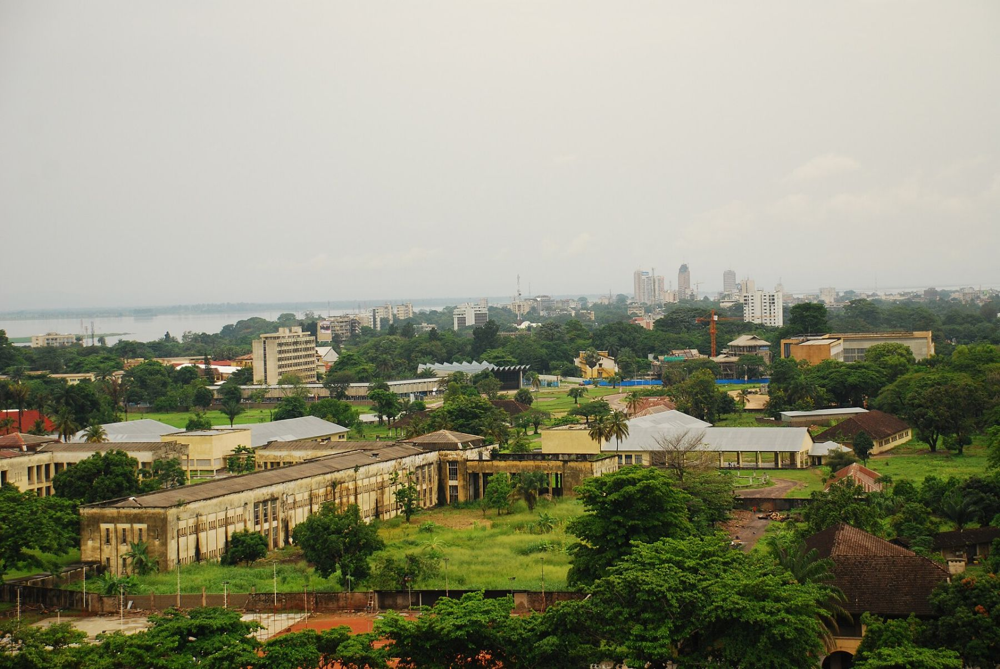

À propos
Kimia veut dire « paix » en lingala. Nous avons commencé en 2019 avec six motos et un numéro WhatsApp, pour que personne à Kinshasa n'ait plus à traverser la ville pour déposer un document.

Notre mission
Rendre la livraison aussi simple qu'un appel : un prix clair, un coursier fiable, un colis qui arrive, partout en RDC.
Kimia en chiffres
Chiffres illustratifs : société fictive créée pour la démonstration.
Notre histoire
- 2019
Six motos, un numéro WhatsApp et un bureau à la Gombe. Premières livraisons de documents pour les cabinets et les banques.
- 2020
Courses, repas et médicaments livrés pendant le confinement. 40 coursiers.
- 2021
Premiers contrats e-commerce avec contre-remboursement. Entrepôt de Masina.
- 2022
Ouverture de Matadi et Boma par la route. Application mobile et suivi par SMS.
- 2023
Fret aérien depuis N'djili. Agences de Lubumbashi, Goma et Bukavu.
- 2024
API pour les boutiques en ligne. Kisangani, Mbuji-Mayi et Kananga. Un million de colis dans l'année.
- 2025
Kolwezi, Kikwit et Mbandaka. 2,1 millions de colis. Programme Kimia Moto pour les coursiers.
- 2026
Contre-remboursement reversé en 24 heures. Trente motos électriques en test.

Pourquoi la moto
À Kinshasa, une course de dix kilomètres peut prendre deux heures en voiture. À moto, un coursier formé la fait en quarante minutes, et peut livrer dans les quartiers où les rues ne sont pas goudronnées.

Direction
Ancienne responsable logistique d'un distributeur de boissons. Elle a lancé Kimia en 2019 avec six motos et un numéro WhatsApp.
Dirige les coursiers et les agents, le hub de Masina et les contrats de fret aérien et routier.
Expert-comptable. Responsable des reversements de contre-remboursement, 4 milliards de FC par mois.
Ingénieur logiciel formé à Kinshasa et à Kigali. Il a conçu l'application des coursiers, le suivi en direct et l'API.
A ouvert les agences de Goma et de Bukavu en 2023 et les dirige depuis.
Responsable de Lubumbashi et Kolwezi, et des comptes des sous-traitants miniers.
Chiffres illustratifs : société fictive créée pour la démonstration.
Nos engagements
Coursiers
Payés chaque semaine, assurés et équipés. Aucun bonus de vitesse, formation sécurité obligatoire.
Clients
Prix affiché avant de réserver, preuve de livraison, réclamation traitée en cinq jours ouvrés.
Villes
Trente motos électriques en test à la Gombe, tournées optimisées pour rouler moins.
Données
Numéros et adresses utilisés pour la livraison seulement, conformément au Code du numérique.
Actualités
1 septembre 2026Le contre-remboursement est désormais reversé en 24 heuresProduit
Les montants encaissés par nos coursiers sont reversés aux boutiques le lendemain de la livraison, sur M-Pesa, Orange Money, Airtel Money ou par virement. Le délai était de sept jours.
Les comptes de plus de 1 000 colis par mois sont payés chaque jour à 18 h.
14 juillet 2026Mbandaka rejoint le réseau : avion et bargeRéseau
Trois vols cargo par semaine desservent désormais Mbandaka. Les colis de plus de 100 kg partent par barge depuis Kinshasa, sur devis, en huit à douze jours.
Le point relais Boutique Bolingo, près du port, reçoit et remet les colis du lundi au samedi.
3 juin 2026Trente motos électriques en test à la GombeEnvironnement
Pendant six mois, trente coursiers de la Gombe et de Lingwala roulent sur des motos électriques rechargées au hub et à l'agence de la Gombe, avec batteries échangeables.
Nous mesurons l'autonomie réelle, le coût par course et les pannes avant de décider d'un déploiement plus large.
18 mars 2026600 coursiers certifiés en sécurité routièreSécurité
Tous les coursiers de Kinshasa ont suivi la formation de deux jours : conduite défensive, port du casque et du gilet, transport des charges, conduite sous la pluie.
Les accidents avec arrêt ont baissé de 41 % sur douze mois.
10 février 20262,1 millions de colis livrés en 2025Résultats
Le volume a doublé en un an, porté par le commerce en ligne à Kinshasa et le fret aérien vers Lubumbashi et Goma. 96,8 % des colis ont été livrés dans les délais annoncés.
Kimia compte 3 400 entreprises clientes et 1 450 coursiers, agents et salariés.
5 novembre 2025Nouvelle application : suivi en direct et lien partageableProduit
Le jour de la livraison, le destinataire voit la position du coursier et reçoit un lien de suivi par SMS, sans installer l'application.
Les expéditeurs peuvent reprogrammer une livraison ou la rediriger vers un point relais en deux clics.
Contact presse
- Charte du coursierPDF · 4 p. · 2025Télécharger
- Politique de confidentialitéPDF · 3 p. · 2026Télécharger